- Спасо-Преображенский собор. Западный фасад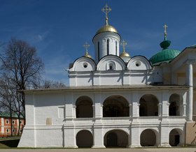
- Спасо-Преображенский собор. Восточный фасад

- Спасо-Преображенский собор. Центральный портал

- Спасо-Преображенский собор. Интерьер галереи

- Спасо-Преображенский собор. Вид с северо-запада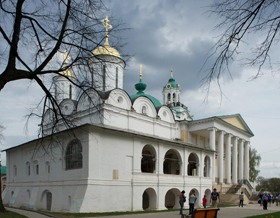
- Спасо-Преображенский собор. Галерея

- Спасо-Преображенский собор. Роспись сводов средокрестия

- Спасо-Преображенский собор. Роспись купола: Христос Пантократор, святители, пророки

- Спасо-Преображенский собор. Церковь Ярославских чудотворцев: Звонница

- Спасо-Преображенский собор. Росписи на столбах

- Спасо-Преображенский собор. Роспись южной стены: Поцелуй Иуды

- Спасо-Преображенский собор. Роспись конхи центральной апсиды: Похвала Богоматери

- Спасо-Преображенский собор. Роспись северной стены: Сорок мучеников севастийских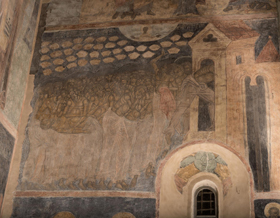
- Спасо-Преображенский собор. Роспись конхи южной апсиды: Господь Саваоф

- Спасо-Преображенский собор. Роспись конхи северной апсиды: Иоанн Креститель

- Спасо-Преображенский собор. Роспись алтаря: Святитель Алексий, митрополит Московский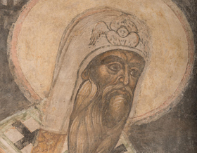
- Спасо-Преображенский собор. Роспись алтаря: Святитель Григорий Богослов

- Спасо-Преображенский собор. Страшный суд

- Спасо-Преображенский собор. Подсвечник

- Спасо-Преображенский собор. Преображение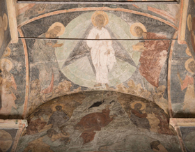
- Спасо-Преображенский собор. Иоанн Предтеча
- Спасо-Преображенский собор. Господь Саваоф

- Церковь Рождества Христова. Колокольня

- Церковь Рождества Христова. Колокольня: Деталь декорации нижнего яруса

- Церковь Рождества Христова. Вид со стороны придела Пяти персидских мучеников

- Церковь Рождества Христова. Деталь оформления фасада

- Церковь Рождества Христова. Купол

- Церковь Рождества Христова. Детали оформления фасада

- Церковь Рождества Христова. Иконостас

- Церковь Рождества Христова. Закомары колокольни

- Церковь Рождества Христова. Изразцы на фасаде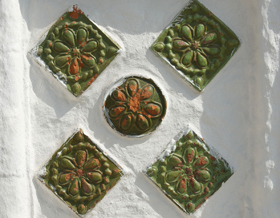
- Церковь Рождества Христова. Роспись сводов

- Церковь Рождества Христова. Роспись купола

- Церковь Рождества Христова. София – Премудрость Божия

- Церковь Рождества Христова. Искушение монаха Иеронима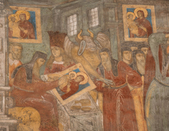
- Церковь Рождества Христова. Деяния апостолов

- Церковь Рождества Христова. Князь Константин Ярославский

- Церковь Николы Надеина. Южный фасад

- Церковь Николы Надеина. Деталь оформления крыльца

- Церковь Николы Надеина. Фрагмент южного фасада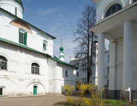
- Церковь Николы Надеина. Деталь оформления фасада

- Церковь Николы Надеина. Церковь Николы Надеина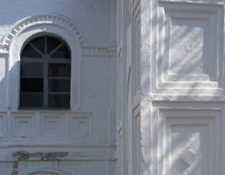
- Церковь Николы Надеина. Вид с северо-востока

- Церковь Николы Надеина. Интерьер галереи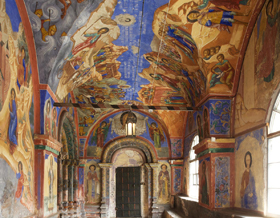
- Церковь Николы Надеина. Интерьер галереи

- Церковь Николы Надеина. Роспись крыльца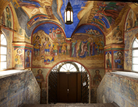
- Церковь Николы Надеина. Роспись сводов

- Церковь Николы Надеина. Иконостас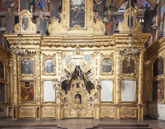
- Церковь Николы Надеина. Фигуры иконостаса

- Церковь Николы Надеина. Святой Николай возвращает зрение царевичу Стефану

- Церковь Николы Надеина. Киевское чудо. Спасение утопшего младенца из вод Днепра по молитве святому Николаю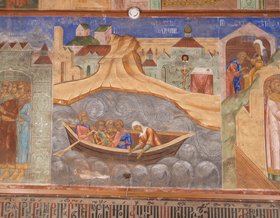
- Церковь Николы Надеина. Ругодивское чудо

- Церковь Николы Надеина. Клеймо с именем храмописцев

- Церковь Николы Надеина. Царские врата

- Церковь Николы Надеина. Вселенский потоп и благодарственная молитва Ноя

- Церковь Николы Надеина. Пророк Илия

- Церковь Ильи Пророка. Южный фасад

- Церковь Ильи Пророка. Северный фасад

- Церковь Ильи Пророка. Западный фасад

- Церковь Ильи Пророка. Восточный фасад

- Церковь Ильи Пророка. Слева – церковь Гурия, Самона и Авива

- Церковь Ильи Пророка. Галерея западного фасада

- Церковь Ильи Пророка. Вид с северо-востока

- Церковь Ильи Пророка. Восточный фасад. Слева – Покровский придел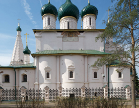
- Церковь Ильи Пророка. Западный фасад

- Церковь Ильи Пророка. Галерея западного фасада и Ризположенский придел

- Церковь Ильи Пророка. Ризположенский придел. Деталь фасада

- Церковь Ильи Пророка. Интерьер галереи

- Церковь Ильи Пророка. Вход в главный храм

- Церковь Ильи Пророка. Роспись сводов

- Церковь Ильи Пророка. Семь дней творения

- Церковь Ильи Пророка. Роспись сводов

- Церковь Ильи Пророка. Иконостас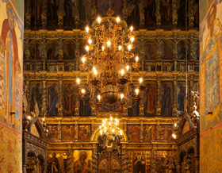
- Церковь Ильи Пророка. Царские врата

- Церковь Ильи Пророка. Деталь интерьера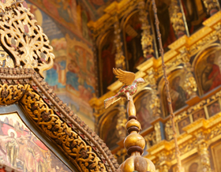
- Церковь Ильи Пророка. Деталь резьбы иконостаса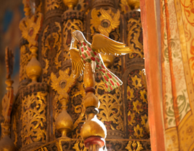
- Церковь Ильи Пророка. Рождение пророка Илии (Ангелы повивают пророка Илию огнём)

- Церковь Ильи Пророка. Обличение царя Ахава пророком Илиёй

- Церковь Ильи Пророка. Услаждение вод иерихонского источника пророком Елисеем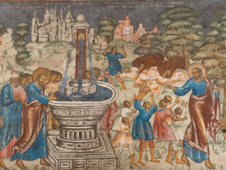
- Церковь Ильи Пророка. История Товия и Товита

- Церковь Ильи Пророка. Род царствия да благословится (Родословие Романовых)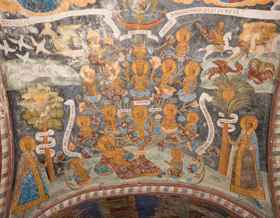
- Церковь Ильи Пророка. Страшный суд

- Церковь Ильи Пророка. Молитва Господня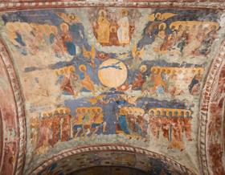
- Церковь Богоявления. Северный фасад

- Церковь Богоявления. Южный фасад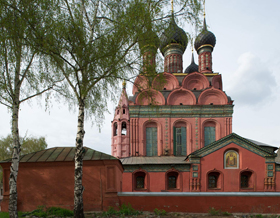
- Церковь Богоявления. Вид с юго-западного угла

- Церковь Богоявления. Деталь оформления фасада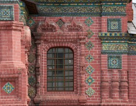
- Церковь Богоявления. Деталь оформления глав

- Церковь Богоявления. Северный фасад

- Церковь Богоявления. Роспись южного свода: Воскресение Господне. Сошествие во ад

- Церковь Богоявления. Роспись северного свода: Вознесение Господне

- Церковь Богоявления. Роспись южной стены: Проповедь на море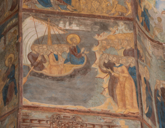
- Церковь Богоявления. Роспись южной стены: Христос перед Каиафой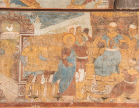
- Церковь Богоявления. Роспись западной стены: Спор о субботе

- Церковь Богоявления. Роспись северной стены: Вечеря в доме Симона прокажённого

- Церковь Богоявления. Роспись западной стены: Поругание Иисуса Христа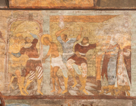
- Церковь Богоявления. Роспись западной стены: Усекновение главы Иоанна Предтечи

- Церковь Богоявления. Роспись на своде: Троица Новозаветная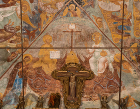
- Церковь Богоявления. Роспись южной стены: Богоявление

- Церковь Богоявления. Роспись северной стены: Исцеление в стране Гадаринской

- Церковь Богоявления. Роспись северной стены: Хождение по водам. Сомнение Петра

- Церковь Богоявления. Роспись южной стены: Лепта вдовицы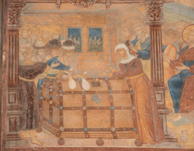
- Церковь Богоявления. Роспись на своде: Успение Богоматери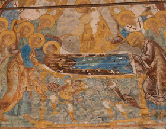
- Церковь Иоанна Предтечи. Западный фасад

- Церковь Иоанна Предтечи. Вид с северо-восточного угла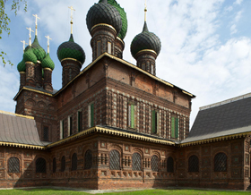
- Церковь Иоанна Предтечи. Крыльцо

- Церковь Иоанна Предтечи. Деталь фасада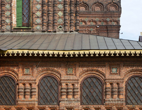
- Церковь Иоанна Предтечи. Деталь крыльца

- Церковь Иоанна Предтечи. Интерьер галереи

- Церковь Иоанна Предтечи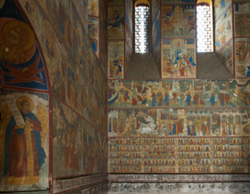
- Церковь Иоанна Предтечи. Интерьер галереи

- Церковь Иоанна Предтечи. Пир у царя Ирода. Танец Саломеи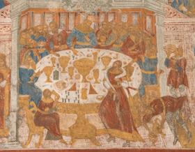
- Церковь Иоанна Предтечи. Песнь песней

- Церковь Иоанна Предтечи. Четьи минеи: Июль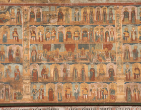
- Церковь Иоанна Предтечи. Сотворение мира: День пятый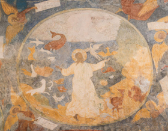
- Церковь Иоанна Предтечи. Купание Вирсавии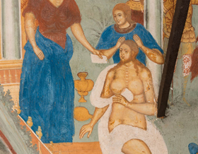
- Церковь Иоанна Предтечи. Видение святого Венедикта